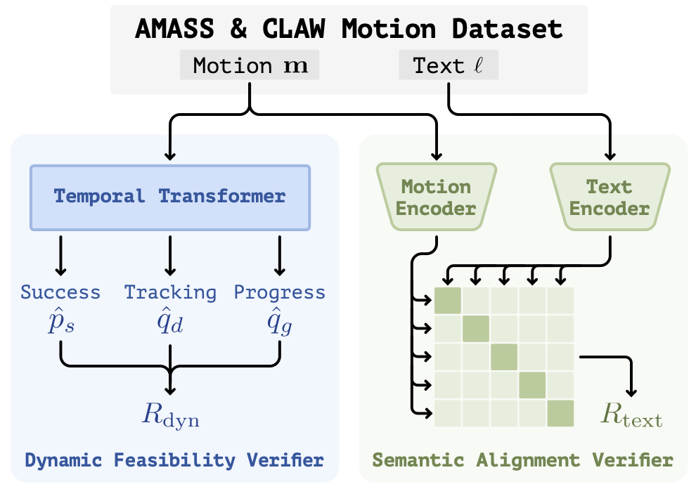
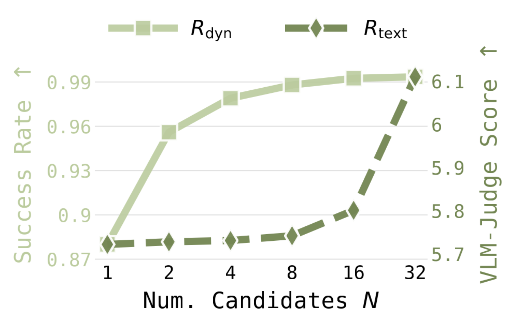

:
:Text-conditioned motion generation has become a promising interface for programming humanoid robots, but current generators are often trained on human motion datasets retargeted to robot morphology. While such data provides rich semantic and kinematic priors, it does not capture the nuances of the whole-body tracking controller, including balance, contact, actuation limits, and controller-specific failure modes. Therefore, generated motions can be semantically plausible yet difficult or impossible for the robot to execute. We propose TEXEDO, a test-time scaling framework for humanoid motion generation that improves motion quality without requiring a stronger underlying generator. Given a text prompt, our method samples multiple motions from the pre-trained text-conditioned generator and selects the best executable and task-aligned motion. The reward model combines a dynamic feasibility verifier, distilled from whole-body tracking rollouts to predict physical executability, with a semantic alignment verifier that measures text-motion alignment in a learned co-embedding space. Our pipeline treats dynamic feasibility as a hard constraint and semantic alignment as the selection objective within the feasible set. Across large-scale simulation studies and real-world deployment on a Unitree G1, we show that our test-time scaling strategy consistently improves both tracking fidelity and text alignment, demonstrating that grounded verification is an effective path toward deployable language-guided humanoid motion generation.


| Strategy | VLM-Judge ↑ | Succ ↑ | Empjpe ↓ | Eacc ↓ | Evel ↓ | Q* ↑ |
|---|---|---|---|---|---|---|
| Base (N=1) | 5.722 | 0.873 | 44.34 | 6.09 | 11.82 | 0.829 |
| Rdyn-only (N=32) | 4.924 | 0.990 | 38.15 | 3.30 | 5.91 | 0.945 |
| Rtext-only (N=32) | 6.110 | 0.885 | 42.97 | 4.90 | 10.03 | 0.847 |
| TEXEDO (N=32) | 6.054 | 0.984 | 39.09 | 4.26 | 7.78 | 0.926 |
| Method | VLM-Judge ↑ | Succ ↑ | Empjpe ↓ | Eacc ↓ | Evel ↓ | Q* ↑ |
|---|---|---|---|---|---|---|
| Kimodo (Base, N=1) | 4.823 | 0.937 | 38.62 | 1.84 | 5.33 | 0.918 |
| Kimodo + Rdyn-only (N=32) | 5.020 | 0.955 | 35.47 | 1.42 | 4.28 | 0.937 |
| Kimodo + Rtext-only (N=32) | 5.717 | 0.942 | 38.02 | 1.87 | 5.43 | 0.919 |
| Kimodo + TEXEDO (N=32) | 5.381 | 0.954 | 37.49 | 1.70 | 4.97 | 0.935 |
| Setting | Method | VLM-Judge ↑ | Succ ↑ | Empjpe ↓ | Eacc ↓ | Evel ↓ | Q* ↑ |
|---|---|---|---|---|---|---|---|
| ID | Base (N=1) | 5.722 | 0.873 | 44.34 | 6.09 | 11.82 | 0.829 |
| TEXEDO (N=32) | 6.054 | 0.984 | 39.09 | 4.26 | 7.78 | 0.926 | |
| OOD | Base (N=1) | 4.116 | 0.860 | 36.22 | 8.36 | 15.71 | 0.804 |
| TEXEDO (N=32) | 4.401 | 0.980 | 26.64 | 3.65 | 3.88 | 0.942 |